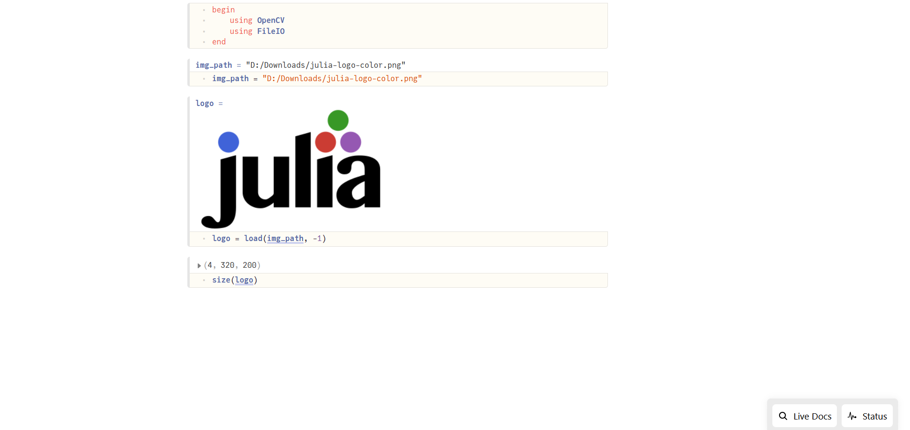
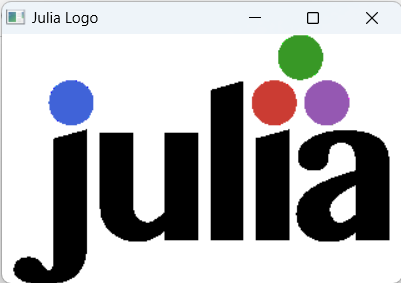

Reading and Writing of Images
OpenCV provides a wide range of functions for image processing, including reading and writing images.
OpenCV.jl provides 2 ways to read and write images
- OpenCV native api
- FileIO.jl api
OpenCV provides imread and imwrite, while FileIO privides load and save for similar functionalities
FileIO api not suppport all image formats currently but it support major formats. If FileIO api not works then use OpenCV native api
Reading Images
using OpenCV
img_path = "/path/to/image"
img = OpenCV.imread(img_path)with FileIO
using OpenCV, FileIO
img_path = "/path/to/image"
img = load(img_path)in both cases img has same data. Both methods accept same reading flags[imreadflags].
using OpenCV
img_path = "/path/to/image"
flag = OpenCV.IMREAD_UNCHANGED
img = OpenCV.imread(img_path, flag)with FileIO
using OpenCV, FileIO
img_path = "/path/to/image"
flag = OpenCV.IMREAD_UNCHANGED
img = load(img_path, flag)Writing Images
using OpenCV
img = rand(UInt8, 1000, 1000) |> OpenCV.Mat
img_path = "/path/to/image"
OpenCV.imwrite(img_path, img)with FileIO
using OpenCV, FileIO
img = rand(UInt8, 1000, 1000) |> OpenCV.Mat
img_path = "/path/to/image"
save(img_path, img)Both methods accept same writing flags[imwriteflags].
using OpenCV
img = rand(UInt8, 1000, 1000) |> OpenCV.Mat
img_path = "/path/to/image"
flag = Int32[OpenCV.IMWRITE_JPEG_QUALITY, 100]
OpenCV.imwrite(img_path, img, flag)with FileIO
using OpenCV, FileIO
img = rand(UInt8, 1000, 1000) |> OpenCV.Mat
img_path = "/path/to/image"
flag = Int32[OpenCV.IMWRITE_JPEG_QUALITY, 100]
save(img_path, img, flag)Displaying Images
When working with images, it's obviously helpful to be able to look at them. If you use Julia through Pluto, VSCode, or IJulia, images should display automatically.
Preview from Pluto.jl

OpenCV.imshow method display image on Qt window.

Plots.jl To-do
Makie.jl To-do
Notes
- imreadflagshttps://docs.opencv.org/4.x/d8/d6a/groupimgcodecsflags.html#ga61d9b0126a3e57d9277ac48327799c80
- imwriteflagshttps://docs.opencv.org/4.x/d8/d6a/groupimgcodecsflags.html#ga292d81be8d76901bff7988d18d2b42ac